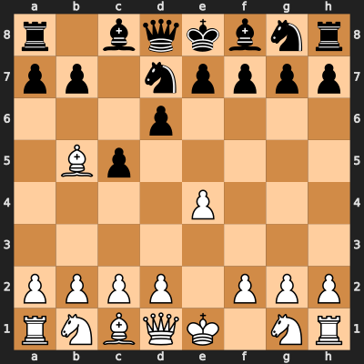
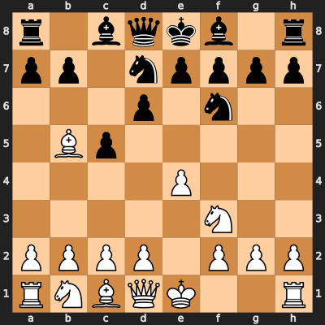
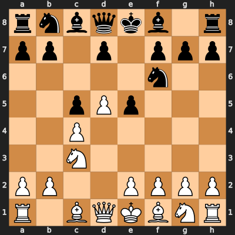
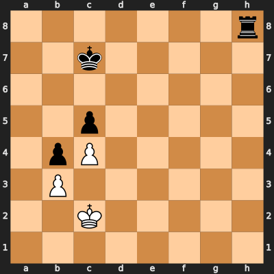
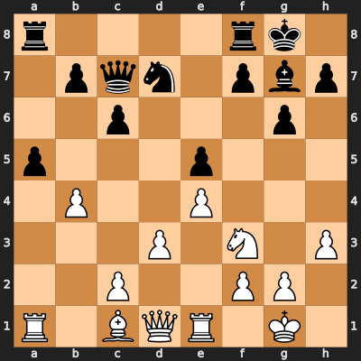
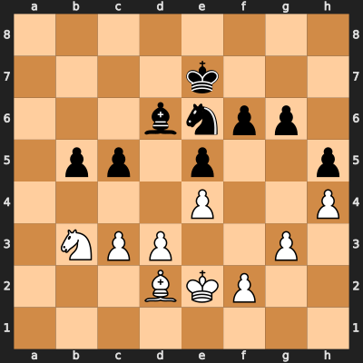
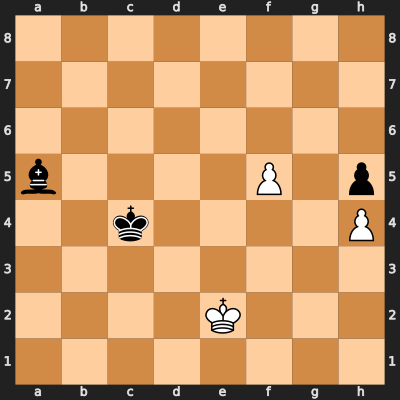

Two Move Chess
Introduction
In international chess it is widely recognized that the player with the white piecese has a slight first-move advantage. On her move, the player with the white pieces surveys a board where each player has made the same number of moves. By contrast, on his move the player with the black pieces faces a board where he is always one move behind his opponent.
Two Move Chess (also written "2 Move Chess") is designed to remedy White's first move advantage in a manner similar to Balanced Marseillais Chess and Doublemove Chess, while adhering more closely to the play of international chess.
Design
The general idea of Two Move Chess is for White to begin with a single move, and for players to take turns of two moves from then on. On each turn after the first, each player is therefore able to catch up and then surpass her opponent in terms of the number of moves played. Players cannot move the same piece twice in a turn, to prevent overly powerful turns such as moving the queen twice. Each move must be legal according to the rules of international chess, which immediately brings up the question of how play could continue if the first move of a two move turn comes with check. In Two Move Chess, this is solved by ending that player's turn after that single move, and allowing his opponent to make a single move in response before the game continues. An en passant capture opportunity is handled in the same way, so that the capture opportunity is not lost. Moves that capture a piece or promote a pawn are also allowed a response, in order to keep the flow of the game as close as possible to international chess.
Setup
The board, pieces, and starting position for Two Move Chess are the same as in international chess. The rules could also be easily adapted to Chess960 and other chess variants.
Pieces
The pieces in Two Move Chess are exactly the same as in international chess.
Rules
- The board, pieces and starting position in Two Move Chess are the same as in international chess.
- White begins the game with a single move. From then on, each player makes either one or two moves per turn as described below. Each of these moves must be individually legal according to the rules of international chess for the position on the board at the moment it is played. That is, two positions are evaluated on a two move turn. Note that the terms turn and move are not interchangeable--a move refers to a legal move in international chess, while a turn may consist of a two move turn, a single move turn, or a response move turn, as defined below.
- Two move turn: When taking a two move turn, a player cannot move a piece twice. For example, if a player castles on the first move of a two move turn, she cannot move either the king or castling rook on the second move of that turn. Also, the first move of a two move turn cannot be one that satisfies any of the criteria for a single move turn (defined in rule #4).
- Single move turn: If a player is not taking a response move turn (defined in rule #5) and he begins his turn with a move satisfying any of these conditions, it becomes a single move turn and there is no second move on that turn:
- The move places the opponent in check (or checkmate)
- The move provides an opportunity for an en passant capture
- The move captures an opponent's piece
- The move promotes a pawn
- Response move turn: After a player has made a single move, her opponent immediately also takes a turn with a single move (unless the game has ended in checkmate). This turn, known as a response move turn, does not itself cause the next turn to be a response move turn even if it meets one of the criteria above.
- Check and checkmate are evaluated exactly as in international chess for each position on the board.
- The game ends in stalemate if at the start of his turn a player is not in check and he cannot complete a legal turn. There are two situations to consider:
- If his opponent has just taken a single move turn, then it is stalemate if he is not in check and he has no available legal moves.
- If his opponent has not just taken a single move turn, then it is stalemate if he is not in check and he has no available two move turns and no available single move turns.
- Because each move of a two move turn must be legal according to the rules of international chess, a player who is in check must escape from check on the next move--if she is taking a two move turn this must occur on the first move of her turn. Likewise, if a player has an opportunity to capture an opponent's pawn en passant, the pawn can only be captured on the next move. It cannot occur on the second move of a two move turn.
- Every board position that has occurred in a game is considered in determining a draw by threefold repetition or fivefold repetition, including positions that occur after the first move of a two move turn. In addition to the conditions for equivalence used in international chess, positions in Two Move Chess are only considered the same if they occur when if it is the same player's turn and that player has the same move options (there are three distinct possibilities: it is the beginning of a turn that is not a response move turn, it is half way through a two move turn, or it is a response move turn).
- The Fifty move and Seventy-five move rules of international chess are replaced by a Fifty turn rule and a 75 turn rule, noting again that the terms turn and move are not equivalent in Two Move Chess.
- When recording a game, a two move turn must be distinguished from the moves of the other player. If using standard algebraic notation, which uses white space to separate moves by different players on the same turn, a comma may be used to separate the two moves of a two move turn, for example "Nf6,d5."
- While learning to play Two Move Chess, players may agree to verbally announce "single move" and "response" while taking single move and response move turns, in a manner similar to the verbal announcement of "check" that beginners often agree to make when learning to play international chess.
Notes
In Two Move Chess, each player usually begins his turn facing a board where he has made one less move than his opponent and ends it having made one more move than his opponent. When taking a single move turn, he instead chooses to catch up to his opponent in the number of moves taken. After the response move turn, he again faces a board where he has made one less move than his opponent. This situation is maintained for each player throughout the game, providing a balance between the players in terms of the number of moves taken that does not exist in international chess.
In the following examples, single moves are shown in bold text and response moves are shown in bold italics. By convention, the first move by White can be considered a response move. The moves of a two move turn are recorded in standard notation, separated by a comma.
Example 1
In this example, White makes a single move that places Black in check, and Black blocks the check with a response move.
1.e4 c5,d6 2.Bb5+ Nd7 
Example 2
In most situations where a player contemplates a single move turn, she has the strategic choice of either taking a single move turn or taking a two move turn in which the second move is the move she considered for a single move turn. This example illustrates this choice. It is nearly the same as Example 1, except that White places Black in check on the second move of a two move turn.
1.e4 c5,d6 2.Nf3,Bb5+ Nd7,Nf6 
Example 3
In this example Black makes a single move that provides an en passant capture opportunity. In this case, White does not capture en passant in his response move.
1.d4 Nf6,c5 2.c4,d5 e5 3.Nc3 
Example 4
In this example it is White's turn and Black has not just taken a single move turn. The game ends in stalemate because White is not in check and cannot complete either a double move turn or a single move turn. There is no possible double move turn since the only piece that can move is the king, and a piece cannot be moved twice in one turn. There are also no possible single move turns because no pieces can be captured and there are no checks to be revealed by moving the king.

Example 5
Here is an entire game of Two Move Chess. This game is based on the game played by Fabiano Caruana and Magnus Carlsen in the third round of the World Chess Championship 2018 match on 2018-11-12. The move order has been changed in a number of places from the original game in order to construct a legal game of Two Move Chess. Although players of this caliber would certainly have made many different strategic and tactical choices if they had actually been playing Two Move Chess, this example illustrates that Two Move Chess is similar to international chess even while providing a more balanced game.
1.e4 c5,Nc6 2.Nf3,Bb5 g6,Bg7 3.Bxc6 dxc6 4.d3,O-O Qc7,e5 5.Re1,a3 Nf6,O-O 6.b4,Nbd2 Bg4,cxb4 7.h3,axb4 Bxf3 8.Nxf3 a5,Nd7 
9.bxa5 Rxa5 10.Bd2,Qb1 Raa8,Rfe8 11.Qb4,Bc3 b5,f6 12.Rxa8 Rxa8 13.Ra1,Kf1 Rxa1+ 14.Bxa1 Qa7,Kf7 15.Bc3,Ke2 Qa2,Bf8 16.Qb2,g3 Qxb2 17.Bxb2 Nc5,h5 18.Bc3,Nd2 Ne6,Bd6 19.Nb3,Bd2 Ng5,c5 20.h4,c3 Ne6,Ke7 
21.Be3,Kd1 Kd7,f5 22.Kc2,Nd2 fxe4 23.dxe4 c4,Nc5 24.Kd1,Bxc5 Bxc5 25.Ke2 Kc6,b4 26.cxb4 Bxb4 27.Nf1,f4 Kc5,exf4 28.gxf4 Ba5 29.Ne3,f5 gxf5 30.Nxc4 Kxc4 31.exf5 ½ – ½ 